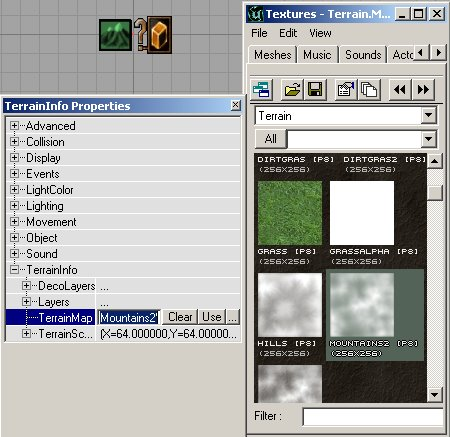
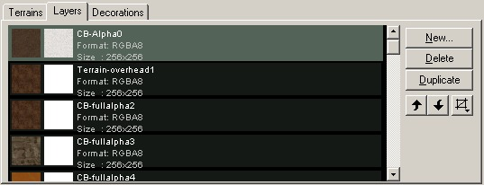
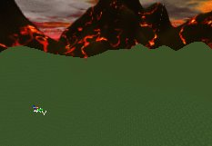

UDN
Search public documentation:
TerrainTutorialJP
English Translation
한국어
Interested in the Unreal Engine?
Visit the Unreal Technology site.
Looking for jobs and company info?
Check out the Epic games site.
Questions about support via UDN?
Contact the UDN Staff
한국어
Interested in the Unreal Engine?
Visit the Unreal Technology site.
Looking for jobs and company info?
Check out the Epic games site.
Questions about support via UDN?
Contact the UDN Staff
テレイン
本書の概要: テレイン文書の目次 本書の変更記録: 2110 ビルド用に文書を分割するため、Jason Lentz(DemiurgeStudios)により最終更新。原作者Jason Lentz(DemiurgeStudios)。はじめに
テレイン テュートリアルへようこそ。ここではテレインの作成や修正の仕方を個別のセクションで説明しています。このセクションはテレインの新規作成から、ディテールの追加や仕上げへと、段階を追ってアレンジされています。 直接ページにジャンプするには、下のリンクの1つをクリックしてください：- CreatingTerrain(テレインの作成)
- EditingTerrainMaps(テレイン マップの編集)
- EditingTerrainLayers(テレイン レイヤーの編集)
- CreatingDecoLayers(装飾レイヤーの作成)
- AdditionalTerrainTips(その他のテレインのヒント)
テレインの作成
 このセクションでは、空レベルからテレインを作成する方法について説明しています。この文書のサブセクションは以下のとおりです：
テレインの作成
このセクションでは、空レベルからテレインを作成する方法について説明しています。この文書のサブセクションは以下のとおりです：
テレインの作成 - TerrainMap(テレイン マップ)の編集
- 基礎テレインの作成
- TerrainMap(テレインマップ)
- テクスチャの追加
- テレイン生成
TerrainMap(テレイン マップ)の編集

このセクションでは[Terrain Editor](テレイン エディタ)にある、TerrainMap[テレイン マップ]を変更するためのさまざまなツールの使用方法を説明します。以下のツールについて詳しく説明します： TerrainMapの編集- 頂点編集ツール
- 選択ツール
- ペイント ツール
- スムージング ツール
- ノイズ ツール
- フラット ツール
- 可視性ツール
- エッジ回転ツール
テレイン レイヤーの編集

ここではTerrainMapとは何か、そしてそれがどうレベルで示されるかを詳しく説明します。またテレイン内での個別のレイヤーの作成や変更方法も説明しています。詳しいトピックは以下のとおりです： テレイン レイヤーの編集- TerrainInfo(テレイン情報)
- レイヤー階層
- レイヤー
- 新しいレイヤーの作成
- レイヤー プロパティ
- TextureMap軸
- テレイン編集ツールでのAlphaMap(アルファ マップ)の編集
- 偽のDisplacementMaps
DecoLayer(装飾レイヤー)の作成
 ここではDecoLayerの作成方法を勉強します。静的メッシュでのランダムかつコントロールされたマップの取り込みに便利です。文書の大半はそれぞれのプロパティや使用法方を説明しています。下は主なセクションです：
DecoLayerの作成
ここではDecoLayerの作成方法を勉強します。静的メッシュでのランダムかつコントロールされたマップの取り込みに便利です。文書の大半はそれぞれのプロパティや使用法方を説明しています。下は主なセクションです：
DecoLayerの作成 - 一枚のDecoLayerの作成
- DecoLayerのプロパティ
- AlignToTerrain(テレインの配置)
- ColorMap(カラーマップ)
- DensityMap(密度マップ)
- DensityMultiplier(密度乗数)
- DisregardTerrainLighting(テレイン ライティングを無視)
- DrawOrder(描画オーダー)
- FadeOutRadius(半径をフェードアウト)
- LitDirectional(リット方向)
- MaxPerQuad(最大/4倍)
- RandomYaw(ランダム ヨー)
- ScaleMap(スケール マップ)
- ScaleMultiplier(スケール乗数)
- Seed(シード)
- ShowOnInvisibleTerrain(テレインを非表示)
- ShowOnTerrain(テレインを表示)
- StaticMesh(静的メッシュ)
その他のテレインのヒント

 ここではテレインの効率性と同様、外観を向上する方法を説明します。全てのヒントがテレイン編集ツールのものではありませんが、最適なテレインを作成するために役立つでしょう。以下がそのセクションです：
その他のテレインのヒント
ここではテレインの効率性と同様、外観を向上する方法を説明します。全てのヒントがテレイン編集ツールのものではありませんが、最適なテレインを作成するために役立つでしょう。以下がそのセクションです：
その他のテレインのヒント - マップの保存とテスト
- テレイン統計
- SkyBox(スカイボックス)の追加
- SunLight(サンライト)の追加
- DistanceFog(ディスタンス フォグ)
- 複数のTerrainInfo(テレイン情報)、複数のゾーン